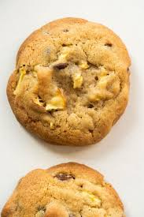

Apple Pie Sugar Cookies

Description
Delicious sugar cookies stuffed with apples stewed in spices and brown sugar.
Ingredients
- 1 cup softened butter
- 3/4 cup white sugar
- 3/4 cup brown sugar
- 1 large egg
- Splash of vanilla
- 2.5 cups flour
- tsp baking soda
- .5 tsp baking powder
- Pinch of salt
- Cinnamon
- Ground ginger
- 2-3 granny smith apples
- Ground cloves
- Nutmeg
- Splash of lemon juice
Steps
- Wash and chop Apples. You can peel them first if you don't like the texture.
- Add chopped apples, 2 tbs+ brown sugar, more apple pie spices, and a half shot of lemon juice to a sauce pan and simmer over medium heat for 15 minutes.
- Set filling aside to cool.
- Pre-heat oven to 375 degrees farenheit.
- Cream together sugars and softened butter until smooth.
- Beat in egg and vanilla till just combined.
- Combine flour, baking soda, baking powder, salt with apple pie spices to taste.
- Slowly add dry ingredients to wet ingredients from step 3-4.
- Roll 1.5 tbs of dough into a ball and press your thumb into the middle, pinching around the edges to make a hollow.
- Fill the hollow with apple filling and them close up the ball by pinching the corners back over the filling and smoothing the dough out. Repeat until all dough is used.
- Arrange dough balls on an ungreased baking sheet an inch apart from each other and bake for 10 minutes.
- After the cookies are done baking, smack the pan against a heat proof surface like a cutting board or counter. Let them rest on the pan for at least 5 minutes. They will finish cooking on the hot pan.
- Now you can cover them in salted caramel if you want them to be more decadent.